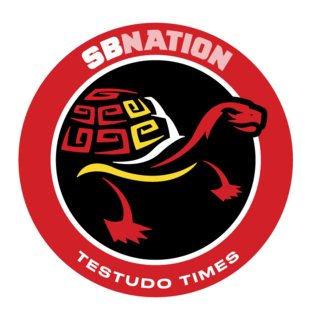
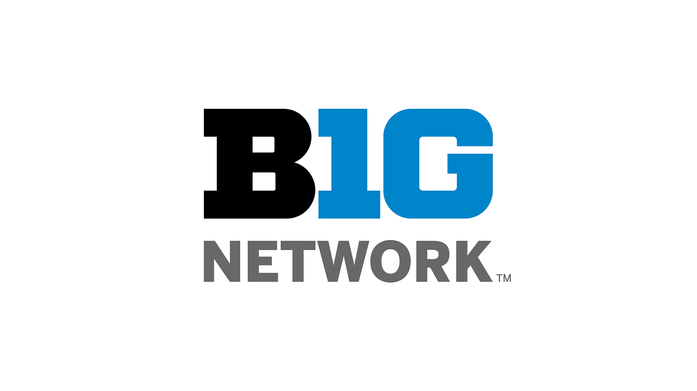
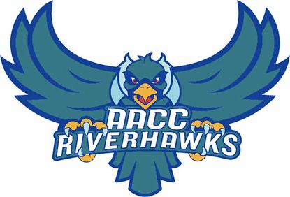

Experience
Writer
Testudo Times

Jan. 2021 - Present
- General Assignment writer for SB Nation's Maryland site
- Write quick pieces recapping Maryland Athletics news
Ramp Associate
Amazon @ BWI Airport

June 2020 – Feb. 2021
- Help unload and load flights at BWI Airport
- Allowed to drive tug and belt-loader machinery on ramp
Director of Communications
The Pride: UMD's Official Student Fan Organization

May 2020 – Present
- Manage Facebook, Instagram and Twitter pages
- Create graphic designs & promotional campaigns
Social Media Chair
Society of Professional Journalists: UMD's student chapter

Jan. 2020 – Present
- Manage Instagram and Twitter pages
- Publicize SPJ events with graphic designs
Production Assistant
Big Ten Network

Jan. 2020 – Present
- Assist with the production of athletic events broadcasted by BTN Plus
- Roles worked: Technical director, Graphics operator, Camera operator
Videographer
Maryland Athletics

July 2019 – Present
- Film game footage for both Soccer and Lacrosse teams
- Filmed and distributed practice and game footage for the Football team during the 2019 and 2020 seasons
Production Assistant
Capital News Service
Feb. 2019 – Present
- Volunteer for Maryland Newsline, a student-run news program
- Positions worked: Audio, VTR, camera operator, and floor director
Reporter/Producer
The Left Bench

Feb 2017 – Present
- Assist with the production of a biweekly studio show covering Maryland Athletics
- Produce and edit video news packages
- Help post different content on Facebook, Twitter and Instagram
Intern
Anne Arundel Community College Athletic Department

Aug. 2017 - May 2019
- Live-streamed home games through the athletic department’s YouTube page
- Produced a monthly recap video about the teams in season
- Technical Director for NJCAA Region 20 Soccer Championships - Oct. 2017
- Play-by-play broadcaster for NJCAA Region 20 Softball Tournament - April 2018
- Game clock operator for NJCAA Women’s Lacrosse National Tournament- May 2019
Education
- Bachelor of Arts, Journalism, Minor in Leadership studies, University of Maryland: College Park, Expected graduation, May 2022
- Associate of Arts, Transfer Studies, Anne Arundel County Community College, May 2019
Skills
- Journalism: Proficient skills in writing, reporting, editing, producing, intermediate skills with AP style, rule of thirds and lighting.
- Social media: Proficient skills in managing multiple Facebook, Twitter and Instagram pages. Proficient in utilizing tools like TweetDeck, linkinbio, LinkTree and other SMM tools.